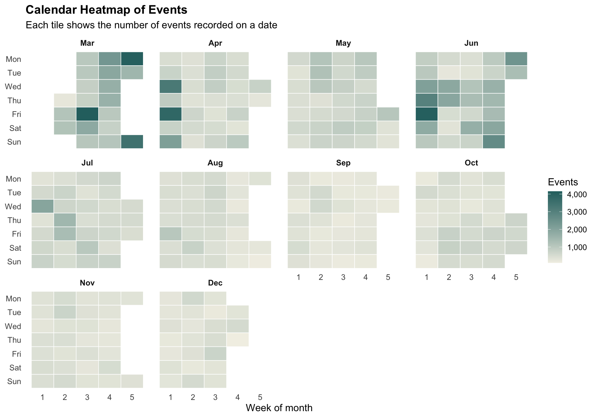
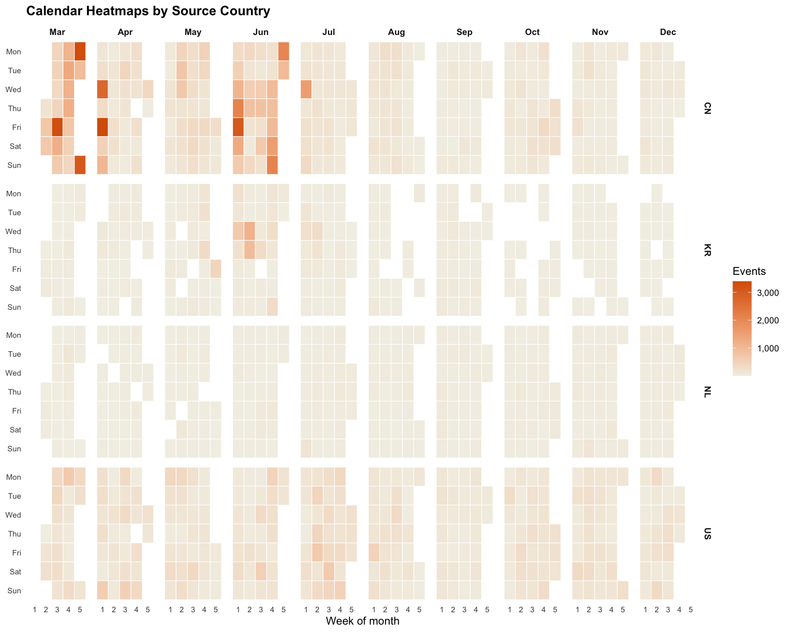
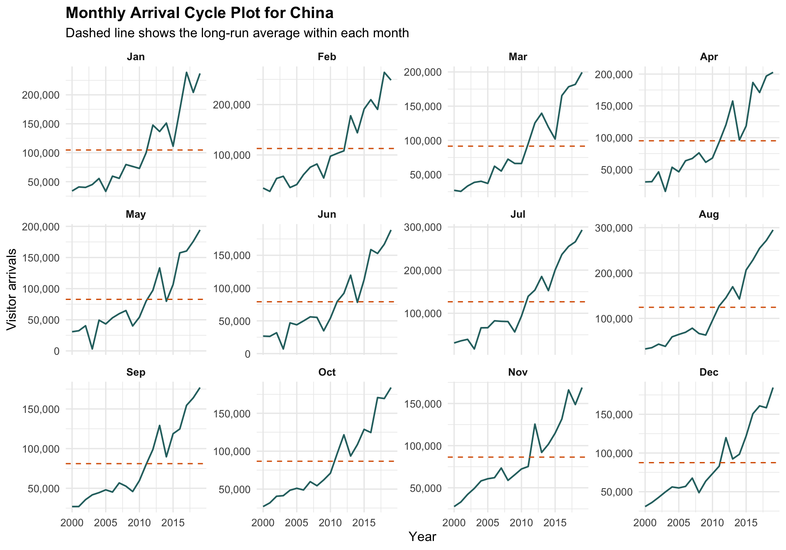
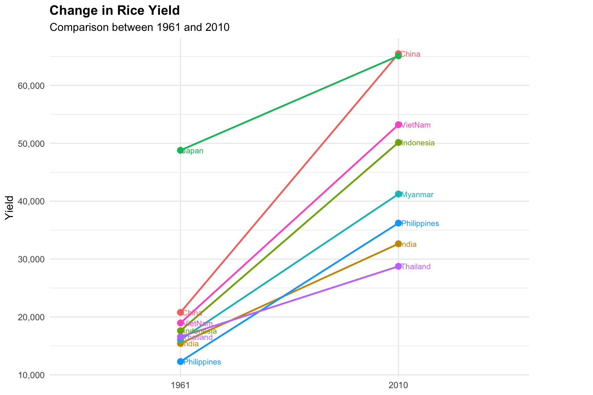
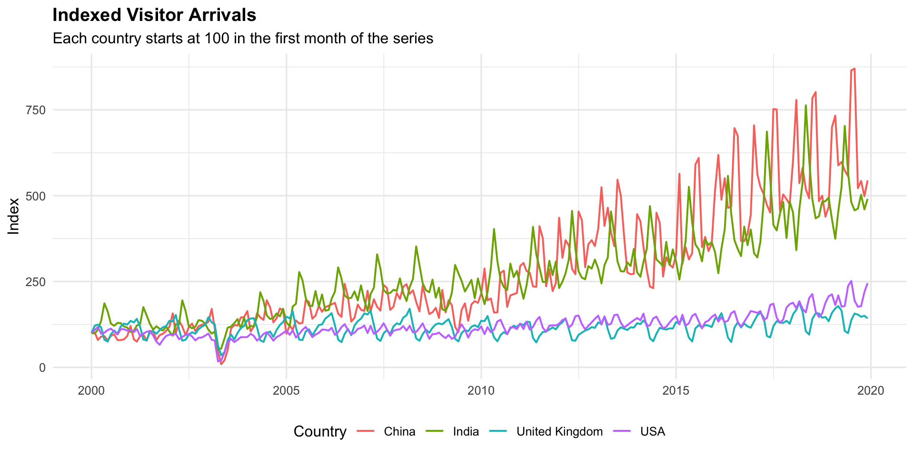

if (!requireNamespace("pacman", quietly = TRUE)) {
install.packages("pacman", repos = "https://cloud.r-project.org")
}
pacman::p_load(
tidyverse,
readxl,
lubridate,
scales,
patchwork,
knitr
)Hands-on_Ex08
1 Visualising and Analysing Time-oriented Data
1.1 Overview
Time-oriented data can be viewed from several angles. Some tasks focus on daily intensity, some focus on repeated seasonal patterns, and some focus on change between two points in time.
In this hands-on exercise, three visual techniques are used:
- calendar heatmap for event intensity by date;
- cycle plot for seasonal arrivals by month;
- slopegraph for comparing rice yield change between two years.
By the end of this exercise, we should be able to:
- prepare timestamp fields for time-based visualisation;
- build calendar heatmaps with
ggplot2; - reshape monthly arrival data for cycle plots;
- compare start and end values using slopegraphs;
- interpret time patterns without relying only on a standard line chart.
1.2 Installing and launching R packages
1.3 Plotting Calendar Heatmap
1.3.1 The data
The calendar heatmap uses eventlog.csv. Each row records an event timestamp and source country.
eventlog_path <- "data/eventlog.csv"
if (!file.exists(eventlog_path)) {
stop("eventlog.csv is missing from the data folder.")
}
eventlog <- read_csv(eventlog_path, show_col_types = FALSE) %>%
mutate(
timestamp = lubridate::ymd_hms(timestamp, tz = "UTC"),
date = as.Date(timestamp),
year = year(date),
month = month(date, label = TRUE, abbr = TRUE),
month_num = month(date),
week_of_month = ((day(date) - 1) %/% 7) + 1,
weekday = wday(date, label = TRUE, abbr = TRUE, week_start = 1)
)
glimpse(eventlog)Rows: 199,999
Columns: 9
$ timestamp <dttm> 2015-03-12 15:59:16, 2015-03-12 16:00:48, 2015-03-12 1…
$ source_country <chr> "CN", "FR", "CN", "US", "CN", "CN", "CN", "CN", "CN", "…
$ tz <chr> "Asia/Shanghai", "Europe/Paris", "Asia/Shanghai", "Amer…
$ date <date> 2015-03-12, 2015-03-12, 2015-03-12, 2015-03-12, 2015-0…
$ year <dbl> 2015, 2015, 2015, 2015, 2015, 2015, 2015, 2015, 2015, 2…
$ month <ord> Mar, Mar, Mar, Mar, Mar, Mar, Mar, Mar, Mar, Mar, Mar, …
$ month_num <dbl> 3, 3, 3, 3, 3, 3, 3, 3, 3, 3, 3, 3, 3, 3, 3, 3, 3, 3, 3…
$ week_of_month <dbl> 2, 2, 2, 2, 2, 2, 2, 2, 2, 2, 2, 2, 2, 2, 2, 2, 2, 2, 2…
$ weekday <ord> Thu, Thu, Thu, Thu, Thu, Thu, Thu, Thu, Thu, Thu, Thu, …eventlog %>%
head() %>%
knitr::kable(format = "html")| timestamp | source_country | tz | date | year | month | month_num | week_of_month | weekday |
|---|---|---|---|---|---|---|---|---|
| 2015-03-12 15:59:16 | CN | Asia/Shanghai | 2015-03-12 | 2015 | Mar | 3 | 2 | Thu |
| 2015-03-12 16:00:48 | FR | Europe/Paris | 2015-03-12 | 2015 | Mar | 3 | 2 | Thu |
| 2015-03-12 16:02:26 | CN | Asia/Shanghai | 2015-03-12 | 2015 | Mar | 3 | 2 | Thu |
| 2015-03-12 16:02:38 | US | America/Chicago | 2015-03-12 | 2015 | Mar | 3 | 2 | Thu |
| 2015-03-12 16:03:22 | CN | Asia/Shanghai | 2015-03-12 | 2015 | Mar | 3 | 2 | Thu |
| 2015-03-12 16:03:45 | CN | Asia/Shanghai | 2015-03-12 | 2015 | Mar | 3 | 2 | Thu |
1.3.2 Building the Calendar Heatmap
daily_events <- eventlog %>%
count(date, year, month, month_num, week_of_month, weekday, name = "events")ggplot(daily_events, aes(week_of_month, fct_rev(weekday), fill = events)) +
geom_tile(colour = "white", linewidth = 0.3) +
facet_wrap(~month, ncol = 4) +
scale_fill_gradient(low = "#F2F0E6", high = "#2A6F6F", labels = comma) +
scale_x_continuous(breaks = 1:5) +
labs(
title = "Calendar Heatmap of Events",
subtitle = "Each tile shows the number of events recorded on a date",
x = "Week of month",
y = NULL,
fill = "Events"
) +
theme_minimal(base_size = 12) +
theme(
plot.title = element_text(face = "bold"),
panel.grid = element_blank(),
strip.text = element_text(face = "bold")
)
1.3.3 Building multiple calendar heatmaps
The next view repeats the calendar heatmap for the four most common source countries. This makes it easier to see whether event activity is concentrated in the same periods.
top_countries <- eventlog %>%
count(source_country, sort = TRUE) %>%
slice_head(n = 4) %>%
pull(source_country)
daily_country_events <- eventlog %>%
filter(source_country %in% top_countries) %>%
count(source_country, date, month, week_of_month, weekday, name = "events")ggplot(daily_country_events, aes(week_of_month, fct_rev(weekday), fill = events)) +
geom_tile(colour = "white", linewidth = 0.25) +
facet_grid(source_country ~ month) +
scale_fill_gradient(low = "#F2F0E6", high = "#D95F02", labels = comma) +
scale_x_continuous(breaks = 1:5) +
labs(
title = "Calendar Heatmaps by Source Country",
x = "Week of month",
y = NULL,
fill = "Events"
) +
theme_minimal(base_size = 10) +
theme(
plot.title = element_text(face = "bold"),
panel.grid = element_blank(),
axis.text.x = element_text(size = 7),
axis.text.y = element_text(size = 7),
strip.text = element_text(face = "bold", size = 8)
)
1.4 Plotting Cycle Plot
1.4.1 Step 1: Data import
The cycle plot uses monthly air-arrival data. The original file is wide, with one column per country, so it is reshaped into long format.
arrival_path <- "data/arrivals_by_air.xlsx"
if (!file.exists(arrival_path)) {
stop("arrivals_by_air.xlsx is missing from the data folder.")
}
arrivals <- read_excel(arrival_path) %>%
rename(date = `Month-Year`) %>%
pivot_longer(
cols = -date,
names_to = "country",
values_to = "arrivals"
) %>%
mutate(
date = as.Date(date),
year = year(date),
month = month(date, label = TRUE, abbr = TRUE),
month_num = month(date)
)
glimpse(arrivals)Rows: 8,400
Columns: 6
$ date <date> 2000-01-01, 2000-01-01, 2000-01-01, 2000-01-01, 2000-01-01,…
$ country <chr> "Republic of South Africa", "Canada", "USA", "Bangladesh", "…
$ arrivals <dbl> 3291, 5545, 25906, 2883, 3749, 33895, 13692, 19235, 65151, 5…
$ year <dbl> 2000, 2000, 2000, 2000, 2000, 2000, 2000, 2000, 2000, 2000, …
$ month <ord> Jan, Jan, Jan, Jan, Jan, Jan, Jan, Jan, Jan, Jan, Jan, Jan, …
$ month_num <dbl> 1, 1, 1, 1, 1, 1, 1, 1, 1, 1, 1, 1, 1, 1, 1, 1, 1, 1, 1, 1, …1.4.2 Step 2: Deriving month and year fields
For a cycle plot, each panel is one month. The line inside the panel shows how that month changes across years.
cycle_country <- "China"
cycle_data <- arrivals %>%
filter(country == cycle_country) %>%
group_by(month_num, month) %>%
mutate(month_average = mean(arrivals, na.rm = TRUE)) %>%
ungroup()1.4.3 Step 3: Plotting the cycle plot
ggplot(cycle_data, aes(year, arrivals)) +
geom_line(colour = "#2A6F6F", linewidth = 0.7) +
geom_hline(aes(yintercept = month_average), colour = "#D95F02", linetype = "dashed") +
facet_wrap(~month, ncol = 4, scales = "free_y") +
scale_y_continuous(labels = comma) +
labs(
title = paste("Monthly Arrival Cycle Plot for", cycle_country),
subtitle = "Dashed line shows the long-run average within each month",
x = "Year",
y = "Visitor arrivals"
) +
theme_minimal(base_size = 12) +
theme(
plot.title = element_text(face = "bold"),
strip.text = element_text(face = "bold")
)
The cycle plot keeps the seasonal structure visible. It is easier to compare all Januaries with other Januaries, all Februaries with other Februaries, and so on.
1.5 Plotting Slopegraph
1.5.1 Step 1: Data import
The slopegraph uses rice.csv, which contains rice yield and production by country and year.
rice_path <- "data/rice.csv"
if (!file.exists(rice_path)) {
stop("rice.csv is missing from the data folder.")
}
rice <- read_csv(rice_path, show_col_types = FALSE)
glimpse(rice)Rows: 550
Columns: 4
$ Country <chr> "China", "China", "China", "China", "China", "China", "Chin…
$ Year <dbl> 1961, 1962, 1963, 1964, 1965, 1966, 1967, 1968, 1969, 1970,…
$ Yield <dbl> 20787, 23700, 26833, 28289, 29667, 31445, 31006, 31868, 314…
$ Production <dbl> 56217601, 65675288, 76439280, 85853780, 90705630, 98403990,…1.5.2 Step 2: Plotting the slopegraph
The slopegraph compares the first and last available years for the countries with the largest production in the latest year.
start_year <- min(rice$Year, na.rm = TRUE)
end_year <- max(rice$Year, na.rm = TRUE)
top_rice_countries <- rice %>%
filter(Year == end_year) %>%
slice_max(Production, n = 8, with_ties = FALSE) %>%
pull(Country)
slope_data <- rice %>%
filter(
Country %in% top_rice_countries,
Year %in% c(start_year, end_year)
) %>%
group_by(Country) %>%
filter(n_distinct(Year) == 2) %>%
ungroup()ggplot(slope_data, aes(factor(Year), Yield, group = Country, colour = Country)) +
geom_line(linewidth = 0.9) +
geom_point(size = 2.8) +
geom_text(aes(label = Country), hjust = -0.08, size = 3, check_overlap = TRUE) +
scale_y_continuous(labels = comma) +
coord_cartesian(clip = "off") +
labs(
title = "Change in Rice Yield",
subtitle = paste("Comparison between", start_year, "and", end_year),
x = NULL,
y = "Yield",
colour = "Country"
) +
theme_minimal(base_size = 12) +
theme(
plot.title = element_text(face = "bold"),
legend.position = "none",
plot.margin = margin(5.5, 70, 5.5, 5.5)
)
1.6 My Extension: Indexed arrivals for selected countries
This extension compares selected countries using an index. Each country’s first month is set to 100, so the line shows relative change rather than absolute volume.
selected_arrivals <- arrivals %>%
filter(country %in% c("China", "India", "USA", "United Kingdom")) %>%
group_by(country) %>%
arrange(date, .by_group = TRUE) %>%
mutate(index = arrivals / first(arrivals) * 100) %>%
ungroup()ggplot(selected_arrivals, aes(date, index, colour = country)) +
geom_line(linewidth = 0.7) +
scale_y_continuous(labels = label_number(suffix = "")) +
labs(
title = "Indexed Visitor Arrivals",
subtitle = "Each country starts at 100 in the first month of the series",
x = NULL,
y = "Index",
colour = "Country"
) +
theme_minimal(base_size = 12) +
theme(
plot.title = element_text(face = "bold"),
legend.position = "bottom"
)
1.7 Key Takeaways
- Calendar heatmaps are useful for dense daily records because they preserve date context.
- Cycle plots separate seasonal comparison from long-term trend comparison.
- Slopegraphs work well when the main message is change between two points in time.
- Time-oriented data often needs derived fields such as date, year, month, weekday and week-of-month before visualisation.
1.8 References
- R4VA chapter: https://r4va.netlify.app/chap17